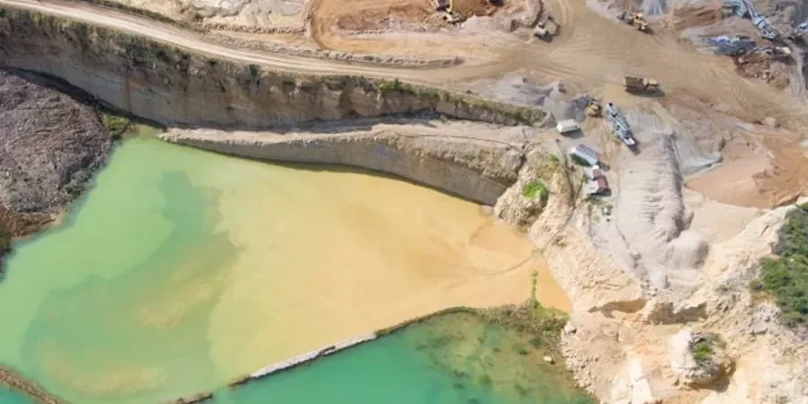

Our firm provides comprehensive geotechnical engineering services tailored to Sunnyvale's unique urban and geological context. From site characterization and subsurface investigation to foundation design and construction monitoring, we deliver integrated solutions that support safe and efficient development. We combine advanced field techniques, such as undisturbed sampling for accurate soil profiling, with rigorous laboratory testing to inform every project phase. Whether you are planning a commercial building, residential subdivision, or infrastructure upgrade, our local expertise ensures that your project meets performance requirements and regulatory standards from the ground up.

Technical reference image — Sunnyvale
Methodology and scope
Sunnyvale lies within the Santa Clara Valley, a region underlain by deep alluvial deposits from the Santa Cruz Mountains and the Diablo Range. The typical subsurface profile consists of interbedded layers of silty clay, sand, and gravel, with the near-surface often comprising stiff to very stiff clay (the 'Bay Clay' equivalent) overlying dense sands and gravels. Groundwater is generally encountered at depths of 10 to 30 feet, but can be shallower near creeks and seasonal wetlands, requiring careful dewatering planning. The area is also subject to seismic hazards, including strong ground shaking from the San Andreas and Hayward faults, as well as potential liquefaction in loose, saturated sands. Our seismic microzonation studies help evaluate these risks, while assessments of expansive soils—common in the clay-rich layers—are critical for slab-on-grade performance. Understanding this complex stratigraphy is essential for foundation design, earthwork, and excavation support.
Local considerations
Our team brings consolidated regional experience to Sunnyvale, having completed numerous projects in Santa Clara County's challenging subsurface conditions. We operate a calibrated laboratory that performs site-specific testing, including consolidation and direct shear, to derive reliable design parameters. Our engineers coordinate closely with local building departments and geotechnical reviewers to ensure smooth permit approvals. By staying current with evolving codes and maintaining strong relationships with area contractors, we deliver practical, cost-effective solutions that minimize risk and keep projects on schedule.
All geotechnical work in Sunnyvale follows U.S. standards, including ASTM International test methods (e.g., ASTM D1586 for Standard Penetration Testing, ASTM D4318 for Atterberg limits) and ASCE/SEI 7-22 for seismic load criteria. We also adhere to California Building Code (CBC) requirements, which incorporate the latest NEHRP provisions for site-specific ground motion analysis. Our reports are code-compliant and often reference Caltrans guidelines for infrastructure projects, ensuring consistency with state and local review processes.
Frequently asked questions
What are the most common soil challenges for building in Sunnyvale?
Sunnyvale's alluvial soils often include expansive clays that can cause slab heave and foundation cracking if not properly evaluated. Additionally, loose sand layers at depth may be susceptible to liquefaction during a major earthquake. Our investigations specifically address these issues through expansive soil testing and liquefaction analysis, guiding appropriate foundation and ground improvement measures.
How does the high groundwater table affect construction in Sunnyvale?
Shallow groundwater is common in low-lying areas and near creeks, requiring dewatering during excavation and careful waterproofing for below-grade structures. We evaluate seasonal fluctuations and potential for seepage, then recommend dewatering methods such as wellpoints or sump pumps. Our reports also address hydrostatic uplift pressures on slabs and retaining walls.
What California-specific regulations apply to geotechnical reports?
Geotechnical reports in Sunnyvale must comply with the California Building Code (CBC), which adopts ASCE 7-22 for seismic design and includes Chapter 18 for soils and foundations. Additionally, Alquist-Priolo Earthquake Fault Zoning maps may apply near active faults. Our reports are prepared by a licensed California Professional Engineer and meet all local building department submittal requirements.
How long does a typical geotechnical investigation take for a small commercial project in Sunnyvale?
For a typical small commercial site, the field investigation (borings, sampling, and SPT) usually takes one to two days. Laboratory testing then requires one to two weeks, depending on consolidation and strength tests. Report preparation follows, with total turnaround typically three to four weeks from mobilization. We can expedite certain projects with advance planning and prior data review.